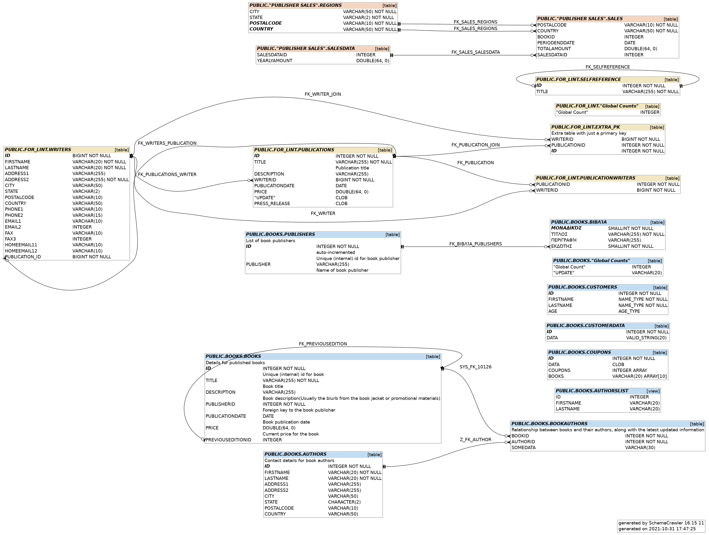

SchemaCrawler - Frequently Asked Questions
General
- What is SchemaCrawler?
- What does SchemaCrawler output look like?
- What are the SchemaCrawler commands?
- What does a SchemaCrawler configuration file look like?
Supported Platforms
- What databases does SchemaCrawler work with?
- What Java version does SchemaCrawler work with?
- What operating systems does SchemaCrawler work with?
- Can SchemaCrawler be used with ant?
- Can SchemaCrawler be used with Apache Maven?
SchemaCrawler Database Diagrams
SchemaCrawler Grep
- What is SchemaCrawler Grep?
- What does SchemaCrawler Grep output look like?
- What are the SchemaCrawler Grep commands?
- What does a SchemaCrawler configuration file look like?
SchemaCrawler Features
- What is SchemaCrawler Lint?
- What are weak associations?
- Can SchemaCrawler be used with scripting languages?
- Can SchemaCrawler be used programmatically?
- Can SchemaCrawler be used integrated with other programs?
Distribution
General
What is SchemaCrawler?
SchemaCrawler is an open-source Java API that makes working with database metadata as easy as working with plain old Java objects. SchemaCrawler is also a command-line tool to output your database schema and data in a readable form. The output is designed to be diff-ed with previous versions of your database schema.
What does SchemaCrawler output look like?
SchemaCrawler can produce plain text, HTML5, HTML5 with embedded diagrams, JavaScript object notation (JSON) or YAML output. The HTML5 output is a combination of valid XML (that can be manipulated by XML tools or XSLT), and HTML that can be viewed in a browser. SchemaCrawler can produce output in the DOT format, which Graphviz can convert into schema diagrams.
{kind=link}
What are the SchemaCrawler commands?
Explore the SchemaCrawler command-line on Katacoda.
Then download and install SchemaCrawler, and run the provided scripts (schemacrawler.sh on Unix, and schemacrawler.cmd on Windows). Detailed command-line help will be displayed.
SchemaCrawler can produce listings, and standard, or verbose details of your schema. The brief schema option gives you just table, view, stored procedure and function names. The standard schema option gives you the column names and primary keys. The verbose schema option will give you details of data types, indexes, primary and foreign keys, view, stored procedure and function definitions. The SchemaCrawler command can be combined with an info-level, which determines the level of detail of schema metadata obtained. The maximum info-level will give you privileges, triggers definitions, and check constraints. Each successive option takes more time to execute.
SchemaCrawler provides commands for producing schema diagrams and running templates, if the appropriate extensions are installed.
SchemaCrawler can also manipulate your data. You can get counts of the rows in tables and views. SchemaCrawler can output all the data in your tables and views, or run specific SQL statements against table and views. SchemaCrawler can be fine-tuned using configuration files.
What does a SchemaCrawler configuration file look like?
An example of a SchemaCrawler configuration file.
Supported Platforms
What databases does SchemaCrawler work with?
SchemaCrawler supports any database for which there is a JDBC database driver available. SchemaCrawler has been tested with various databases, and JDBC drivers. For more information, see Database System Support.
What Java version does SchemaCrawler work with?
SchemaCrawler works with Java SE 8, Compact Profile 2 or better.
What operating systems does SchemaCrawler work with?
SchemaCrawler works with any operating system that supports Java SE 8, Compact Profile 2 or better.
Can SchemaCrawler be used with ant?
Yes, the SchemaCrawler command-line can be called from ant, using the exec task.
Can SchemaCrawler be used with Apache Maven?
Yes SchemaCrawler can be used in a Apache Maven project as an API, or to generate Apache Maven reports in your projects. In order to use SchemaCrawler in your Apache Maven projects, simply add a dependency to SchemaCrawler in your pom.xml. For more details, see the plugins page.
Using the SchemaCrawler Report Maven Plugin, you can generate a SchemaCrawler report along with other reports for your Apache Maven generated site.
SchemaCrawler Database Diagrams
What is a SchemaCrawler database diagram?
SchemaCrawler can generate entity-relationship database diagrams using Graphviz . You can filter out tables, columns, stored procedure and functions based on regular expressions, using the grep functionality. For more details, see the diagramming page.
What does a SchemaCrawler database diagram look like?
An example of a SchemaCrawler database diagram: 
{kind=link}
SchemaCrawler Grep
What is SchemaCrawler Grep?
SchemaCrawler Grep is a set of SchemaCrawler command-line options that allow you to search your database schema for tables and columns that match a regular expression, much like the standard grep tool.
What does SchemaCrawler Grep output look like?
SchemaCrawler Grep output is the same as the SchemaCrawler text output.
What are the SchemaCrawler Grep commands?
See the filtering and grep command-line options above.
What does a SchemaCrawler configuration file look like?
The SchemaCrawler Grep configuration file is the same as the SchemaCrawler configuration file.
SchemaCrawler Features
What is SchemaCrawler Lint?
SchemaCrawler can analyze and lint your database schema design to find potential issues. SchemaCrawler Lint can be run using the --command=lint command-line option. For more details, look at the SchemaCrawler Lint page.
What are weak associations?
Weak associations are inferred associations between tables, similar to foreign keys, even if there is no foreign key defined in the database schema between the tables. For more details, look at the Weak Associations page.
Can SchemaCrawler be used with scripting languages?
SchemaCrawler has built-in support to be used with JavaScript scripts. SchemaCrawler can be integrated with any other scripting language, for example, Groovy, Ruby, Python, and more.
Also, look at the scripting page.
For more details, see scripting examples in the SchemaCrawler examples download, in the examples\javascript, examples\groovy, examples\ruby and examples\python directories.
Can SchemaCrawler be used programmatically?
SchemaCrawler is an API that improves on the standard JDBC metadata facilities. SchemaCrawler provides an easy to use set of plain old Java objects (POJOs) that represent your database schema.
Read Java API Makes Database Metadata as Easily Accessible as POJOs for an introduction to the SchemaCrawler API. (This article may refer to an older release of the SchemaCrawler API, but the concepts are the same.) You can also browse the javadocs.
For more details, see scripting example in the SchemaCrawler examples download, in the examples\api directory.
Can SchemaCrawler be used integrated with other programs?
SchemaCrawler can be integrated with other programs, but this requires some Java programming. SchemaCrawler is designed to be used programmatically with the Spring Framework .
SchemaCrawler comes pre-built with integration with Apache Velocity. This allows you to specify your own templates for formatting the schema. For more details, see scripting example in the SchemaCrawler examples download, in the examples\velocity directory.
Distribution
Where is SchemaCrawler available?
SchemaCrawler is available as a download from GitHub .
Is technical support available?
Yes. Please see Support and Consulting for details.
Is SchemaCrawler free?
See SchemaCrawler license for details.